Stress component plots
Stress is the force per unit area on a part. You can plot the stress on a model due to applied loads and constraints when you select Stress from the Result Type list in the Data Selection group.
The following stress component plots area available:
Principal stress plots
In a loaded part, a particular element orientation exists for which all shear stress components are zero. The normals to the elements in this orientation are called principal directions, and the stresses along these normals are principal stresses. You can plot principal stresses by selecting one of the following stress data types from the Result Component list in the Data Selection group:
-
Max Principal Stress—Maximum principal stress:
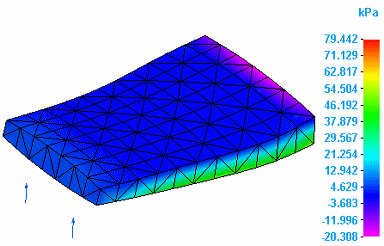
-
Min Principal Stress—Minimum principal stress:
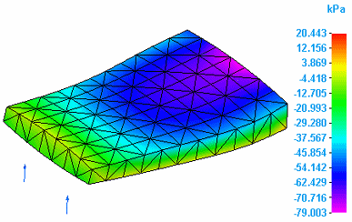
-
Int Principal Stress—Intermediate principal stress:
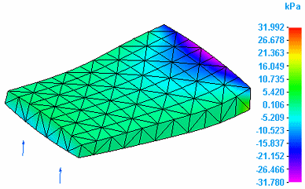
Note:An Int Principal Stress plot on a model that contains solids and plates displays contour colors on the solid, while the plate elements are displayed in the mesh color. The mesh color indicates that no results are available.

-
Plate PrnStress Angle—The Plate Principal Stress Angle plot is generated only for 2D surface meshes. It shows the angle at which there are only normal stresses (principal stresses) on an element, and shear stresses on it become zero.
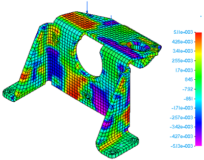
Normal stress plots
You can plot normal directional stresses with respect to the global coordinate system by selecting one of the following stress data types from the Result Component list in the Data Selection group:
Results that are not applicable are shown in the white mesh color.
-
X Normal Stress—Stress applied on the X normal direction:
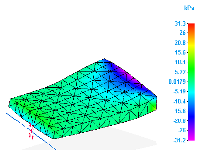
-
Y Normal Stress—Stress applied on the Y normal direction:
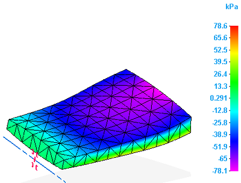
-
Z Normal Stress—Stress applied on the Z normal direction:
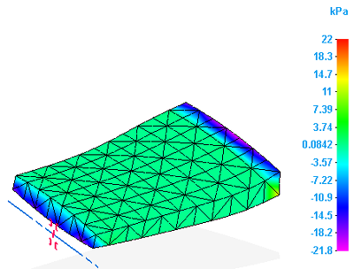
Shear stress plots
You can plot shear directional stresses with respect to the global coordinate system by selecting one of the following stress data types from the Result Component list in the Data Selection group:
-
XY Shear Stress—Shear stress on the XY plane:
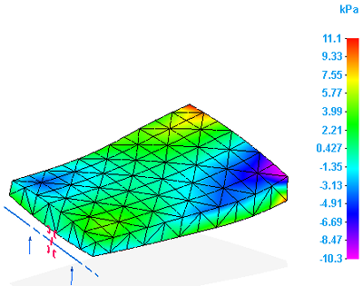
-
XZ Shear Stress—Shear stress on the XZ plane:
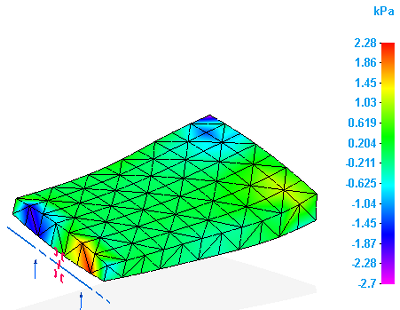
-
YZ Shear Stress—Shear stress on the YZ plane:
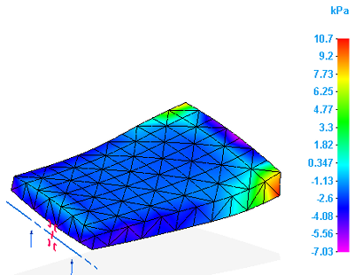
Maximum shear stress plots
You can plot the maximum shear stresses on part geometry by selecting the Max Shear stress data type from the Result Component list in the Data Selection group.
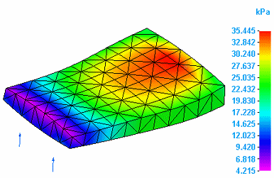
Mean stress plots
The mean stress occurs during a sinusoidally fluctuating stress. You can plot this on the part by selecting the Mean stress data type from the Result Component list in the Data Selection group.

Von Mises stress plots
Von Mises stress is a combination of the three principal stresses at any one particular location. This resultant is usually compared to the material yield strength to determine if failure will occur under the defined loading condition. You can plot this by selecting the Von Mises stress data type from the Result Component list in the Data Selection group.
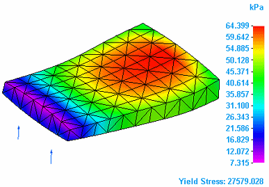
Factor of safety plots
Most industries have defined standards for allowable factor of safety values. The value is related to the lack of confidence in some aspect of the design process, such as calculations, material strength, duty, and manufacture quality.
The factor of safety (FOS) is the ratio of the maximum allowable stress to the ultimate stress.
FOS = Ultimate Stress/Maximum Allowable Stress
Solid Edge Simulation computes FOS based on the Ultimate Stress defined in the material table and the maximum stress found in the solution.
The ultimate stress for structural steel is 52,000 psi. If the maximum allowable stress in a design is 20,000 psi, then the FOS value is 2.6.
The factor of safety plot helps you determine what the stress results say about the adequacy of a design. By examining the factor of safety plot contours, you can exercise engineering judgment when balancing between material cost reduction and ensuring a safe product.
- Interpreting factor of safety values
-
-
This factor of safety plot result is displayed using a User-Defined Scale from 0 to 2.
Factor of safety value
Interpretation
<1.000
The material at that location has failed.
>1.000
The material at that location is safe.
1.000
The material at that location has just started to fail.
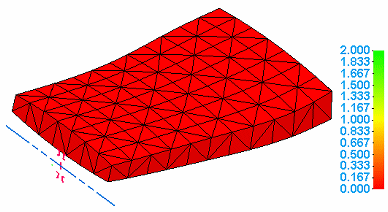
-
You also can display the actual computed factor of safety values by selecting the All Results Scale option on the Color Bar tab→Scale group.
-
You can use factor of safety results to evaluate an assembly that contains parts with different material properties.
-
How do I
Plot resultsLearn more
Plotting resultsResult plots for mixed mesh models
Displacement component plots
Constraint component plots
Strain component plots
Beam properties
Beam reaction component plots
Beam stress component plots
Beam diagrams
Temperature plots
Heat flux component plots
Applied temperature plots